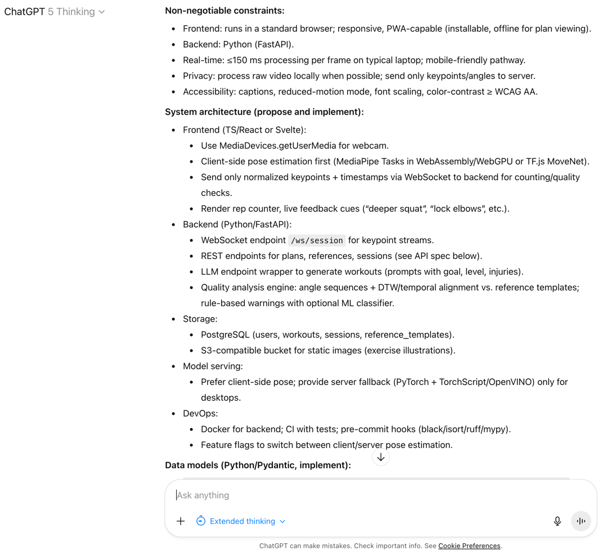
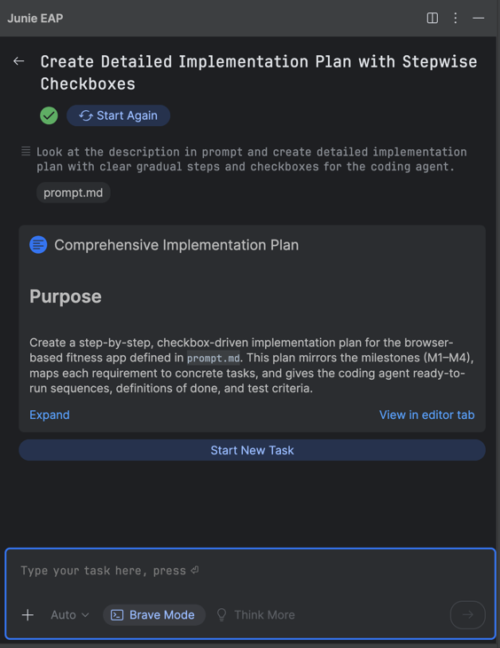
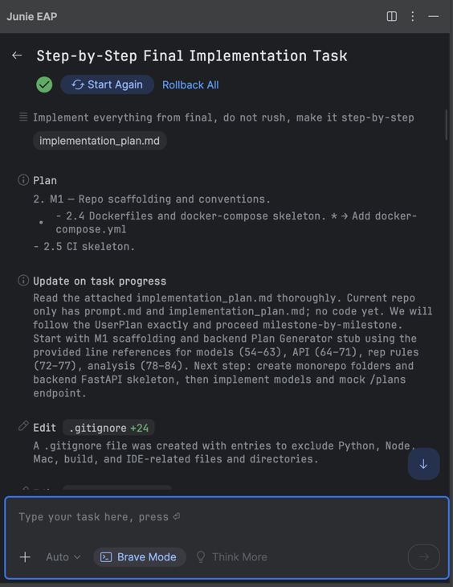

Vibe Coding with Junie
Brief plan
- Come up with some exiting idea
- Go to GPT-5 to make an advanced prompt for coding agent
- Run Junie to implement everything
- Look into the result and fixing bugs with AI
ProfitSatisfaction and fitness
1. Come up with some exiting idea
- Take something you like: music, sports, drawing, walking..
- Think about how tech can help this.
- Search for similar solutions. For fitness there are


2. Go to GPT-5 to make an advanced prompt for coding agent
3. to implement everything
|  |  |
4. Some improvements
- Junie, update README.md with Run instructions
- Manually fix dependency:
failed to load config from /Users/Aleksandr.Avdiushenko/PycharmProjects/fitness-app/frontend/vite.config.ts error when starting dev server: Error [ERR_MODULE_NOT_FOUND]: Cannot find package '@vitejs/plugin-react' imported from /Users/Aleksandr.Avdiushenko/PycharmProjects/fitness-app/frontend/vite.config.ts.timestamp-1761905854386-d9cc5c4f6bb72.mjs - No any tests and camera usage
Actually..There were Milestones in the Junie's Plan
- M1: Repo + scaffolding + plan generator stub
- M2: Live pose + rep counting baseline + UI
- M3: Reference templates + DTW analysis + feedback
- M4: PWA + accessibility + privacy hardening + docs
Implement step-by-stem the Milestone2 part:
Client-side Pose + Real-time Rep Counting + UI

Sometimes Junie even asks questions

5. It's time to run live-demo!
Only one thing before. Look at the pointer on the slides. It also made by Junie!
Github repo: fitness-app
And may be to discuss it: on LinkedIn or in my Telegram channel